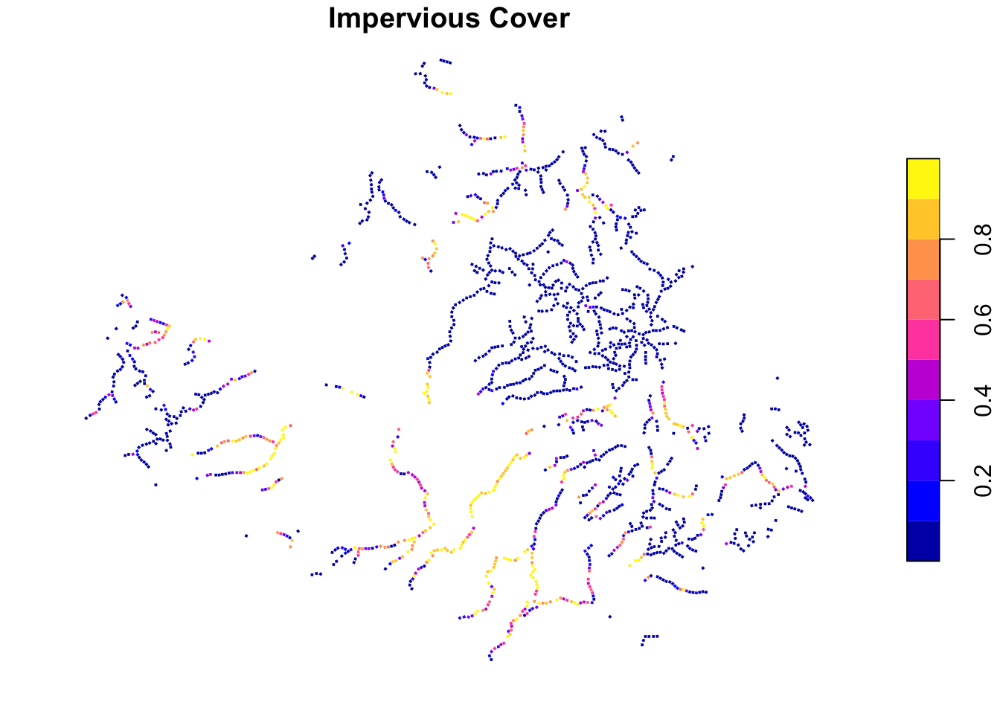
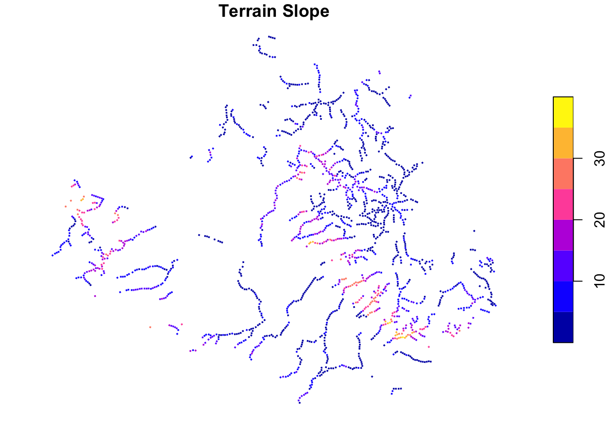
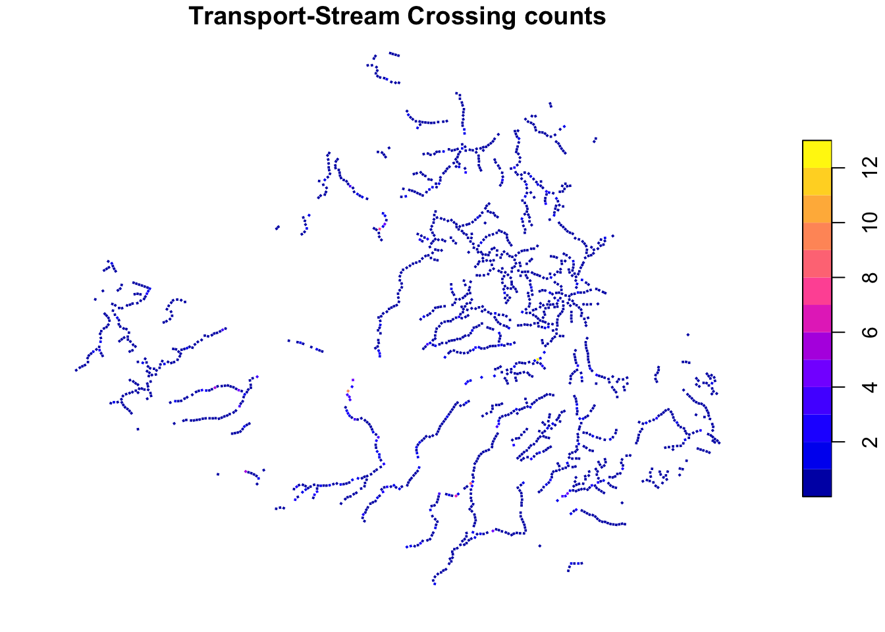
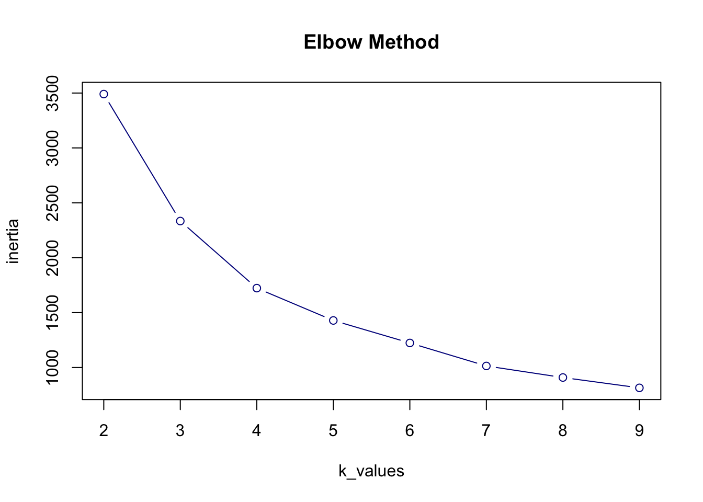
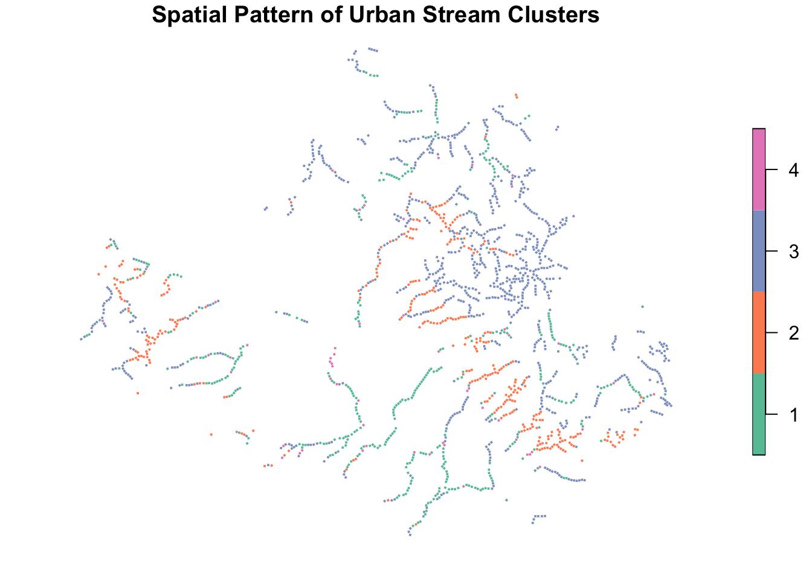

#install.packages("sf")
#install.packages("dplyr")Typology construction using K-means clustering in R
Introduction
This tutorial demonstrates how to construct urban typologies in R. Specifically, we use K-means Clustering, a method of unsupervised machine learning, to classify urban units into typologies for urban stream restoration.
Preparation
In the previous session, we introduced the key preparatory steps for typology construction before clustering. Here, we provide a specific example that illustrates how these steps can be applied in a particular context.
Define your objective:
To identify urban stream typologies in areas directly adjacent to stream corridors, where local conditions affect stream ecology and guide restoration design strategies.Define your focused area:
The stream corridors in the whole city of Dresden.Define your spatial unit:
Fixed size, 100 x 100 m square; centered on the stream and rotated according to the local flow direction of the stream; overlapped units are deleted.Define your variables:
impervious – percentage of impervious surface, such as roads, squares and buildings; related to runoff and water management, may require rain gardens or permeable pavement.
slope – mean terrain slope (degrees); related to erosion and stability, may require slope planting or retaining walls.
crossing – the number of points where roads or railways cross a stream, calculated per 100 meters of stream length; related to ecological connectivity, may require ecological bridges.
Prepare geometries of spatial unit covering focused area:
Ready ingrids_TC.gpkg, with a columngrid_idcreated.Calculate the value of variables in each spatial unit:
Ready ingrids_TC.gpkg, with columnsimpervious,slope,crossingcreated.
Clustering steps
After the above preparatory steps, now we start the clustering process.
We will:
Step 1. Load R packages and data
Step 2. Standardizations
Step 3. Determine optimal k
Step 4. Run K-means clustering
Step 5. Interpret cluster center Step 6. (Optional) Calculate distance to cluster center
Step 1. Load R packages and data
We begin by loading the necessary R packages.
If you haven’t installed these libraries yet, run the following chunk before continuing:
Note: adding # at the beginning if you don’t want to run that line
Next, load the required libraries:
library(sf) # for processing vector data Linking to GEOS 3.13.0, GDAL 3.8.5, PROJ 9.5.1; sf_use_s2() is TRUElibrary(dplyr) # for selecting and transforming data
Attaching package: 'dplyr'The following objects are masked from 'package:stats':
filter, lagThe following objects are masked from 'package:base':
intersect, setdiff, setequal, unionWe first need to set and confirm the working directory. Make sure you copied the prepared grid_TC.gpkg in your working directory folder. Now we read the dataset from a GeoPackage file and display the first few rows using head():
#setwd("/.../clustering") # change the path to your own folder
#getwd()
grids <- st_read("grids_TC.gpkg", quiet = TRUE)We can check how many girds in the file.
# View the first few rows of the data
head(grids)Simple feature collection with 6 features and 4 fields
Geometry type: POLYGON
Dimension: XY
Bounding box: xmin: 420889.5 ymin: 5658844 xmax: 421165.8 ymax: 5659723
Projected CRS: ETRS89 / UTM zone 33N
grid_id impervious slope crossing geom
1 0 0 4.729869 0.8957654 POLYGON ((420982.1 5659723,...
2 1 0 3.581370 0.7567734 POLYGON ((421056.3 5659624,...
3 2 0 3.182152 0.9955550 POLYGON ((421150.8 5659341,...
4 3 0 3.733626 0.9997012 POLYGON ((421142.7 5659083,...
5 4 0 2.914602 0.0000000 POLYGON ((421150.3 5659197,...
6 5 0 3.828850 0.0000000 POLYGON ((421147.5 5658961,...# Count how many grid units we have
nrow(grids)[1] 1745We can also visualize the data to have a better understanding visually.
# Plot impervious
plot(grids["impervious"], border = NA, main = "Impervious Cover")
# Plot slope
plot(grids["slope"], border = NA, main = "Terrain Slope")
# Plot crossing
plot(grids["crossing"], border = NA,
#breaks = "quantile",
main = "Transport-Stream Crossing counts")
Note: By default, plot() is using equal interval, which might make the differences hard to see. You can change the breaks type to show the visual difference more clearly.
Step 2. Standardization
We select the relevant features. These features are then standardized to ensure they contribute equally to the clustering algorithm.
features <- grids %>%
select(impervious, slope, crossing) %>%
st_drop_geometry() # remove geometry column so we just keep a data table
X_scaled <- scale(features) # Standardize (mean=0, sd=1)
head(X_scaled) impervious slope crossing
1 -0.6612074 -0.5714982 0.4049445
2 -0.6612074 -0.7437663 0.2509882
3 -0.6612074 -0.8036468 0.5154779
4 -0.6612074 -0.7209288 0.5200705
5 -0.6612074 -0.8437778 -0.5872618
6 -0.6612074 -0.7066458 -0.5872618Note: Even after selecting variables from an sf object, the geometry column is still there. Use st_drop_geometry() to remove it before applying functions like scale().
Step 3: Determine the optimal K
We use the elbow method to choose a good number of clusters.
For each value of k (e.g. 2 to 9), we run K-means and record a value called inertia : the total distance between points and their cluster centers. Lower inertia means tighter (better) clusters.
# Initialize an empty vector to store inertia values
inertia <- numeric()
# Try k values from 2 to 9
k_values <- 2:9
# Loop through each k value
for (k in k_values) {
km <- kmeans(X_scaled, centers = k, nstart = 20)
# This measures how compact the clusters are: lower is better
inertia <- c(inertia, km$tot.withinss)
}
# Combine the results into a data frame for plotting
elbow_df <- data.frame(k = k_values, inertia = inertia)
print(elbow_df) k inertia
1 2 3490.5663
2 3 2334.0686
3 4 1723.0514
4 5 1428.5589
5 6 1223.6857
6 7 1014.1867
7 8 908.9454
8 9 814.8496Note: We suggest using a larger nstart value, such as 20 or 50, to get more reliable results. Setting nstart = 20 makes R try 20 different starting points and choose the one with the lowest tot.withinss. The tot.withinss value measures how close points are to their cluster centers. Lower values mean better clustering.
We can visualize how inertia changes with increasing k. After a certain point, adding more clusters doesn’t help much — the curve bends. That bend is called the elbow point, and we use it to choose the best k.
# Make the elbow plot
plot(k_values, inertia,
type = "b", # solid circle points
col = "darkblue",
main = "Elbow Method")
Step 4. Run K-Means clustering
Based on the elbow plot, we choose k = 4 as a good number of clusters.
We now run the K-means algorithm and assign each grid to one of the four clusters.
# Set the seed so the clustering result is always the same when re-run
set.seed(0) # The number 0 is just a fixed choice. You can also use 10, 345, etc.
# Choose the number of clusters based on the elbow plot
k <- 4
# Run K-means clustering on the standardized data
kmeans_result <- kmeans(X_scaled, centers = k, nstart = 20)
# Add the cluster labels to the spatial data
grids$cluster <- as.factor(kmeans_result$cluster) # The result kmeans_result$cluster is a list of cluster labels (1 to 4), in the same order as the original rows in X_scaled and grids
head(grids)Simple feature collection with 6 features and 5 fields
Geometry type: POLYGON
Dimension: XY
Bounding box: xmin: 420889.5 ymin: 5658844 xmax: 421165.8 ymax: 5659723
Projected CRS: ETRS89 / UTM zone 33N
grid_id impervious slope crossing geom cluster
1 0 0 4.729869 0.8957654 POLYGON ((420982.1 5659723,... 3
2 1 0 3.581370 0.7567734 POLYGON ((421056.3 5659624,... 3
3 2 0 3.182152 0.9955550 POLYGON ((421150.8 5659341,... 3
4 3 0 3.733626 0.9997012 POLYGON ((421142.7 5659083,... 3
5 4 0 2.914602 0.0000000 POLYGON ((421150.3 5659197,... 3
6 5 0 3.828850 0.0000000 POLYGON ((421147.5 5658961,... 3# Show how many grids fall into each cluster
print(table(grids$cluster))
1 2 3 4
392 365 932 56 Save the updated grid data (with cluster labels) to a new GeoPackage file. You can use it for further analysis and visualize.
#st_write(grids, "grids_cluster.gpkg")We can also visualize the spatial pattern.
# Plot clusters with base R
plot(grids["cluster"],
main = "Spatial Pattern of Urban Stream Clusters",
border = NA)
Step 5. Interpret cluster centers
Now we look at the center of each cluster. First, we check the values in standardized form. Then, we convert them back to the original units (e.g. degrees), so they are easier to understand.
# Get the cluster centers (in standardized form)
scaled_centroids <- kmeans_result$centers
# Print them
print("Cluster centers (standardized):")[1] "Cluster centers (standardized):"print(scaled_centroids) impervious slope crossing
1 1.6080590 -0.3517408 0.1545016
2 -0.4634886 1.6320976 -0.2651149
3 -0.5563009 -0.4721882 -0.1838377
4 1.0229762 -0.3170328 3.7060541# Convert the centers back to original scale: x * SD + mean
original_centroids <- t(apply(
scaled_centroids, 1,
function(x) x * attr(X_scaled, "scaled:scale") + attr(X_scaled, "scaled:center")
))
# Print the real-world values
print("Cluster centers (original):")[1] "Cluster centers (original):"print(original_centroids) impervious slope crossing
1 0.76223558 6.194974 0.6696651
2 0.06641279 19.421070 0.2908348
3 0.03523757 5.391960 0.3642119
4 0.56570913 6.426370 3.8760120# st_write(grids, "grids_cluster_distance.gpkg")To interpret the clustering results, we examine the centroids of each cluster in the original data scale. The table below summarizes the environmental characteristics of each cluster based on the original (unscaled) values.
Typology description
| Typology | Impervious | Slope (°) | Crossing | Description |
|---|---|---|---|---|
| 1 | 0.76 | 6.2 | 0.67 | Urban area with high imperviousness and moderate road impact |
| 2 | 0.07 | 19.4 | 0.29 | Steep natural area with minimal development |
| 3 | 0.04 | 5.4 | 0.36 | Flat and near-natural stream surroundings |
| 4 | 0.57 | 6.4 | 3.88 | Urban stream corridor with high crossing disturbance |
Step 6. (Optional) Calculate distance to cluster center
## Step 7 (Optional): Compute distance to cluster center
# Get the cluster center for each row, using the cluster assignment
centroids_matrix <- kmeans_result$centers[kmeans_result$cluster, ]
# Calculate Euclidean distance between each point and its assigned cluster center
grid_distances <- sqrt(rowSums((X_scaled - centroids_matrix)^2))
# Save to grids
grids$cluster_dist <- grid_distancesSummary
- We prepared spatial data representing the surroundings of urban streams.
- We selected key indicators for stream ecology: imperviousness, slope, and crossing frequency.
- We standardized the data to ensure fair clustering.
- We used the elbow method to decide the K.
- We performed K-means clustering to identify distinct urban stream types.
- We analyzed and interpreted each cluster using centroids.
- (Optional) We calculated how close each grid is to its cluster center.
This workflow can now be applied to your own dataset to explore meaningful typologies for planning and design. Enjoy clustering!